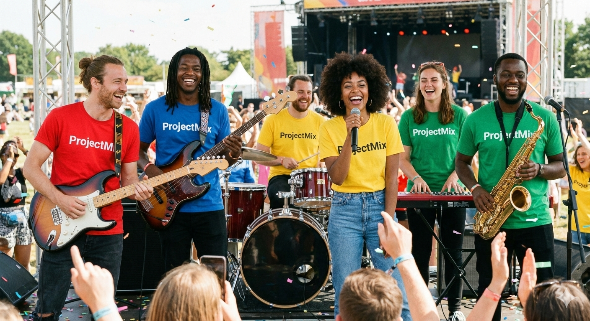
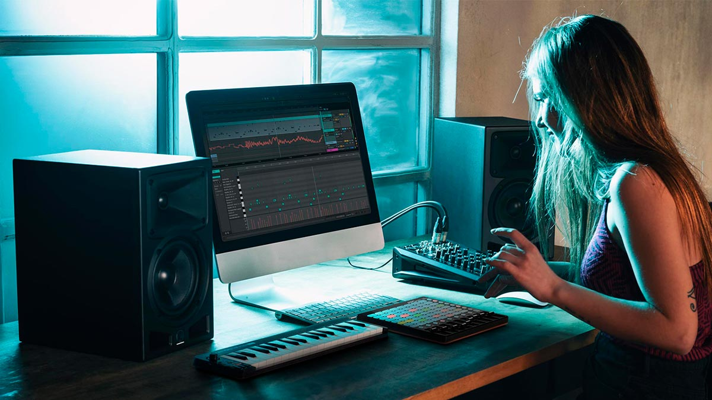
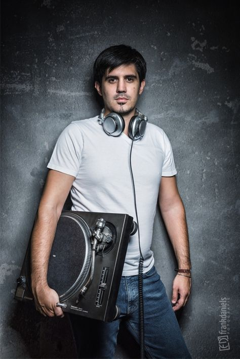

Na nossa Escola de Produção Musical Productormix, seu talento deixa de ser sonho e se transforma em profissão. Aqui, você aprende a criar, produzir e lançar músicas com padrão profissional. Do eletrônico ao trap, do hip-hop ao pop, do rock ao sertanejo, do funk ao R&B, da MPB às trilhas sonoras, você domina os estilos que movimentam o mercado. Cada aula é prática, direta e aplicada. Você cria beats do zero, aprende arranjos modernos, desenvolve identidade sonora e entende como produzir hits de verdade. Ensinamos teoria musical sem complicação, harmonia aplicada, construção melódica, design de som e técnicas atuais usadas pelos grandes produtores. Na mixagem e masterização, você aprende a dar peso, clareza e impacto. Equalização profissional, compressão, ambiência, finalização pronta para Spotify e plataformas digitais. Nossa estrutura é completa: estúdios equipados, microfones profissionais, controladores MIDI, interfaces de alta qualidade e ambiente preparado para criar sem limites. Mas não paramos na técnica. Oferecemos mentoria, orientação de carreira, acompanhamento de portfólio e direcionamento para o mercado musical. Você aprende não apenas a produzir, mas a vender sua arte, construir sua marca e viver de música. Se você quer sair do básico, se destacar e produzir com nível profissional, aqui é o seu lugar. Transforme seu som. Transforme seu futuro. Comece agora.

